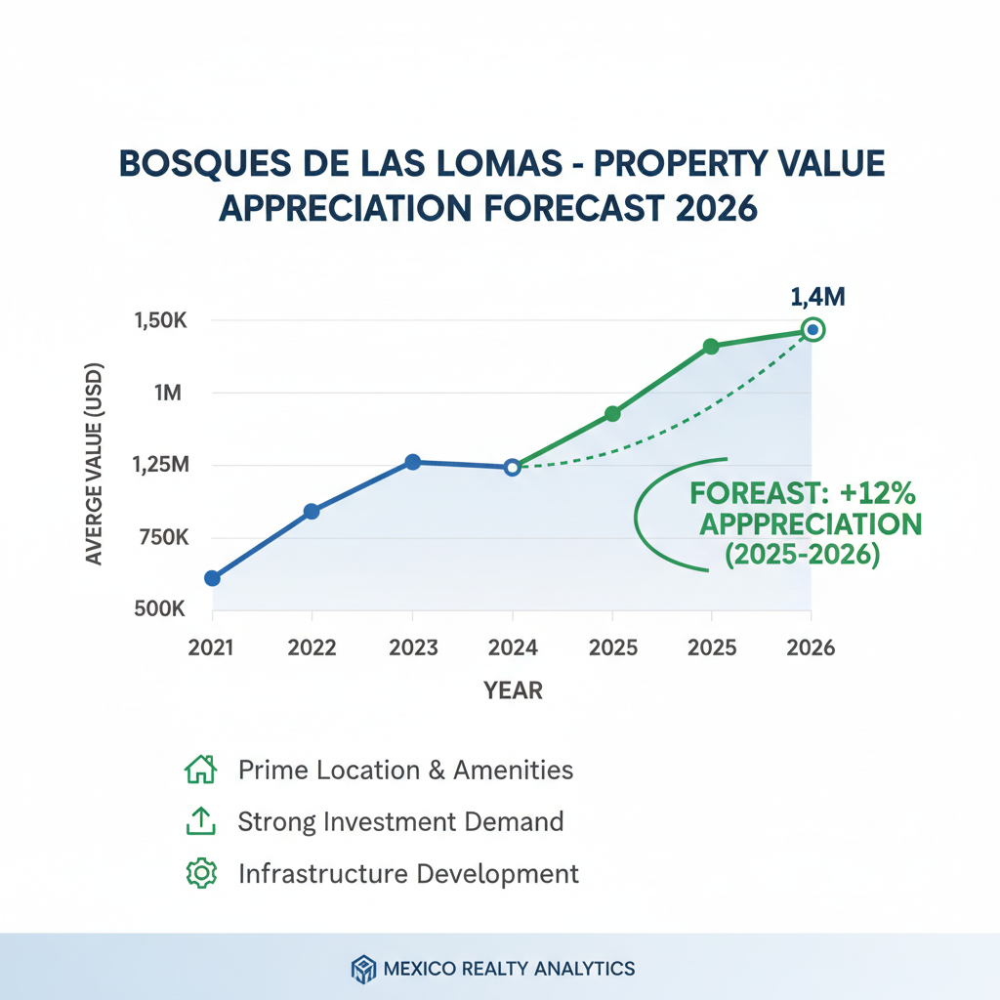

Architectural Guide 2026
Mastering the Modern Sanctuary of Bosques de las Lomas
Beyond the pristine security gates and manicured ravines, Bosques de las Lomas is an architectural and financial ecosystem. We navigate its unique complexities, from Zona I seismic advantages to combating the 'Gringo Tax' and unmapped minas, transforming your vision into a consolidated asset in 2026.
The Resident Architect's View
From my studio in Condesa, I often look west, towards the rolling hills where Bosques de las Lomas rises. The crispness of the air, the way the late afternoon light filters through the ancient ahuehuetes along its main avenues—there's a profound sense of removal there, a different rhythm of life. It’s not just the scale of the properties or the impeccable landscaping; it's the architectural discipline required to integrate true luxury within its challenging, yet beautiful, topography. I appreciate the deliberate quiet, a stark contrast to the lively hum of my own neighborhood, knowing it’s a meticulously engineered silence.

Erik Martínez, AIA
Principal Architect. Former SHoP Architects NYC. Bringing international precision to CDMX's most complex heritage assets.
Iconic Landmarks
- Paseo de los Ahuehuetes Norte
- Paseo de los Tamarindos
- Paseo de los Laureles
A Consolidated Legacy: The Genesis of Bosques
Originally conceived as a natural expansion for ultra-high-net-worth individuals overflowing from the saturated Lomas de Chapultepec, Bosques de las Lomas has evolved far beyond its 20th-century origins. Spanning the Miguel Hidalgo and Cuajimalpa boroughs, it is not merely a residential zone; it is Latin America's most consolidated elite enclave. Its 2026 reality is one of extreme natural topography, stringent regulations, and a dual-tiered economy that demands a sophisticated approach to capital deployment. The original urban plan, designed to integrate with profound ravines, now dictates a highly specialized architectural language for privacy and infrastructure.
Architectural Imperatives & Financial Realities
The market here has decisively shifted from demand for traditional, segmented luxury mansions to highly modernized 'lifestyle' properties. These assets prioritize open-plan living, seamless integration with the natural forest topography, advanced green technologies, and critical self-sustaining micro-infrastructure. As of 2026, severe greenfield land scarcity drives property appreciation, compelling investors towards comprehensive structural and aesthetic retrofitting of existing estates. Rental yields are exceptional, with approximately 130 m² of premium, highly amenitized space in Bosques achievable for the same $35,000 MXN that secures a mere 70 m² in central districts, making it the primary target for corporate expatriates and international executives.
Geotechnical Foundation: The Zona I Advantage & Hidden Risks
Unlike the highly saturated, seismically amplifying soft clays of central CDMX (Zona III), Bosques de las Lomas is situated squarely and securely within Zona I (Hills/Firm Soil). This geological advantage, characterized by highly compact volcanic tuffs, basalts, and dense loess, fundamentally dampens and diffuses seismic energy, drastically reducing the baseline risk of catastrophic structural failure and fundamentally altering structural engineering requirements. However, this macro-advantage harbors a critical localized risk: historical sand mines (minas), unmapped subterranean cavities from past material extraction. Therefore, a rigorous geotechnical survey and deep mechanical soil mechanics study are legally mandated and practically essential prior to executing any new foundation, ensuring your luxury structure is anchored in absolute stability, preempting unforeseen liabilities.
We bridge the rigorous US NCARB/AIA engineering standards with local CDMX expertise, ensuring foundations are not merely compliant but engineered for enduring performance. Our approach involves a detailed understanding of the Zona I soil dynamics, integrating robust surveys to identify and mitigate any sub-surface voids, thus optimizing structural costs while guaranteeing long-term integrity.
Navigating Cultural Heritage: INBAL's Authority & Aesthetic Mandates
Bosques de las Lomas exists within a sensitive matrix of cultural heritage frameworks, specifically designated as an Área de Conservación Patrimonial. While INAH governs pre-Hispanic and colonial assets, INBAL (National Institute of Fine Arts and Literature) holds absolute federal jurisdiction over properties exhibiting recognized artistic, aesthetic, and architectural value constructed during the 20th and 21st centuries. This is particularly salient along catalogued corridors such as Paseo de los Ahuehuetes Norte, Paseo de los Tamarindos, and Paseo de los Laureles. Ownership here is not merely private; it carries a custodial responsibility to Mexico's architectural narrative.
Intervention on an INBAL-designated property is not a matter of choice, but of meticulously adhering to strict aesthetic mandates. Facade morphology, original geometric volumes, rooflines, and specific architectural styles must be meticulously maintained or perfectly restored. The replacement of original exterior materials is heavily scrutinized; if original window frames were crafted from specific timber or distinct mid-century steel profiles, modern replacements must visually replicate this intent. This means installing standard, high-efficiency white PVC frames for soundproofing is routinely rejected; instead, custom-manufactured acoustic windows visually mimicking historical materials are mandated. Our expertise in INBAL compliance allows for the seamless integration of advanced, invisible modern smart-home technology while preserving the historical integrity, avoiding any Clausurado (stoppage) orders.
Water Security: Altitude, Cutzamala, and Private Autonomy
Water security stands as the most critical infrastructural layer in Mexico City real estate. The metropolis is inherently water-stressed, relying heavily on over-exploited subterranean aquifers and the massive, external hydraulic infrastructure known as the Sistema Cutzamala. While historic multi-year droughts severely depleted the system, robust and sustained rainfalls through mid-2025 significantly replenished the reservoirs, reaching a highly secure operational capacity and allowing municipal authorities to categorically rule out immediate 'Day Zero' shortage scenarios for 2026. However, Bosques de las Lomas faces severe localized geographic challenges: its significantly higher elevation imposes a massive penalty on the municipal hydraulic network, creating substantial pressure drops and intermittent supply. Therefore, continuous water supply is entirely dependent on private, decentralized property infrastructure. Every luxury residence necessitates a high-capacity subterranean cistern, ideally exceeding 10,000 liters, mechanically pumped to rooftop tanks and augmented by heavy-duty hydropneumatic pressure systems. We integrate advanced Rainwater Harvesting systems, empirically proven to yield drinking-standard water, effectively transforming a systemic urban vulnerability into a self-sustaining private asset.
Architectural Feasibility: Bosques De Las Lomas 2026
| Project Type | Avg. Permit Time | Seismic Risk Level | Conservation Status |
|---|---|---|---|
| Luxury Retrofit of Existing Estate | 12 - 18 Months | Moderate (Permit Delays/Gringo Tax exposure) | High ROI (Driven by land scarcity) |
| New Build (H/3/20 Compliant) | 18 - 30 Months | High (Geotechnical surveys/Permitting complexities) | Extremely High Value (Premium, rare land parcels) |
| Interior Reconfiguration (Non-Structural) | 6 - 12 Months | Low (Localized utility costs/Acoustic treatment depth) | Immediate Lifestyle Upgrade & Rental Appeal |
Specialized Renovations: Engineering for Autonomy and Serenity
Renovations in Bosques de las Lomas are an exercise in engineering for independence. We prioritize micro-infrastructure: integrating solar photovoltaic arrays to proactively manage and mitigate punitive CFE DAC (Tarifa de Alto Consumo) electricity tariffs, ensuring long-term energy stability. For the absolute acoustic privacy demanded by international executives and digital nomads, we mandate premium double-glazed PVC window systems featuring specialized acoustic insulation gases. These systems simultaneously address severe thermal bridging and complex sound transmission issues, effectively creating hermetic 'silent sanctuaries' against localized urban hum, including the ubiquitous 'gasero' chimes and other service vehicle intrusions. This comprehensive approach safeguards your investment against the 'architecture of hidden costs' and elevates daily living.
High-End Interior Design: Integrating Nature and Smart Technology
Our interior philosophy for Bosques de las Lomas revolves around seamless integration with the natural ravine topography. We design open-plan living spaces that blur the lines between indoor and outdoor, employing natural materials that resonate with the surrounding forest—custom-crafted wood, large-format natural stone, and expansive glazing to maximize views. Beyond aesthetics, every interior is designed with advanced, integrated climate control systems, cutting-edge smart-home automation, and robust redundant digital connectivity, including whole-house Uninterruptible Power Supplies (UPS) and dual-WAN VPN routers with satellite failover (e.g., Starlink), to meet the zero-downtime demands of the global executive.
The Bosques De Las Lomas Cheat Sheet
- Best Streets Paseo de los Ahuehuetes, Paseo de los Tamarindos, Paseo de los Laureles
- Zoning Code H/3/20 (Residential, max 3 levels, min 20% permeable area)
- Est. Cost / m² MXN 20,000 - 30,000 per m² (Luxury Construction, local rates)
- Best Coffee Lardo Bosques (for a sophisticated morning ritual) or a dedicated private chef service within your estate.
- Local Quirk The distinct acoustic properties of its ravines, which can turn ambient neighborhood sounds (like the repetitive musical chimes of 'gasero' delivery trucks) into an unexpected and often intrusive soundscape that requires specialized architectural mitigation.
The Challenge
The primary challenge in Bosques de las Lomas is navigating the critical intersection of extreme natural topography, stringent preservation regulations (INBAL, SEDUVI H/3/20 zoning), and the pervasive 'Gringo Tax' that can erode foreign capital during development.
The bureaucracy is profoundly complex: securing a Manifestación de Construcción Tipo B or C is legally slated for 5 working days, but practically spans several months due to exhaustive prerequisite document verification. Additionally, luxury properties face potential escalation into the punitive Tarifa de Alto Consumo (DAC) for electricity and rely on logistical-dependent Liquefied Petroleum Gas (Gas LP), introducing volatile operational costs. Water supply is intermittent due to high altitude pressure drops, requiring extensive private cisterns.
Our Solution
We deploy a multi-faceted strategy: rigorous pre-acquisition due diligence to verify INBAL status and potential minas; architectural designs that architecturally maximize footprint efficiency within the H/3/20 parameters; and a proactive approach to permitting, strategically front-loading environmental and structural impact studies months in advance to force an expedited Alcaldía review.
To eliminate the Gringo Tax and ensure transparent pricing, we engage independent, highly reputable Notarios Públicos early in the acquisition phase and contract fiercely independent Directors Responsables de Obra (DROs) to act as ultimate technical guarantors, entirely separate from general contractors. We facilitate blind bidding processes through established domestic corporate entities, securing fair local market rates (typically ranging from MXN 20,000 to 30,000 per m² for high-end luxury construction) and safeguarding against inflated quotes that can reach 30-50% above equilibrium for unrepresented foreign investors.


Planning to Buy?
Don't sign a contract before a technical audit. We offer pre-purchase structural assessments in Bosques De Las Lomas.
2026 Cost Report
Get our detailed breakdown of current labor and material costs for luxury residential in CDMX.
Start Your Bosques De Las Lomas Legacy
NYC Precision. Mexican Craft. We eliminate uncertainty for international investors.